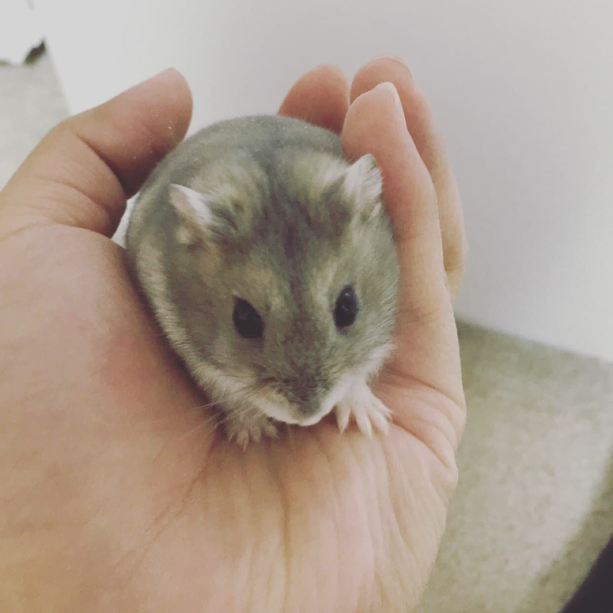
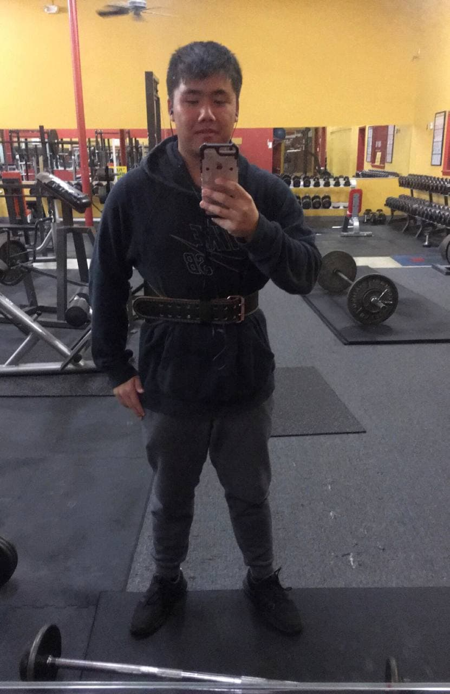
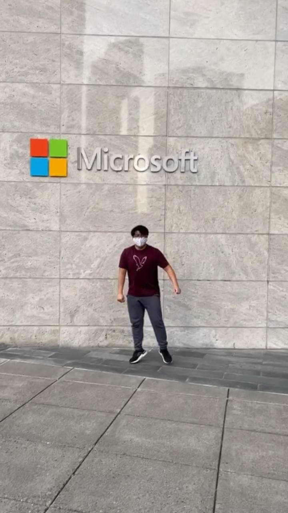

Who Am I?
My name is Khai Truong and I am a 22 year old Vietnamese American with an interest and love for all things automation. I am the oldest child of three, born and raised in Georgia. I enjoy hiking, weight lifting, playing games, playing with my hamster, and eating. In my free time I love to spend time with loved ones and build bonds. I adore anything hamster related and geek out at pokemon card collections. I've found that I learn easier when teaching others. I enjoy seeing the prospects of seeing others on my team succeed and doing well. I have had experience working on teams at my prior school and learned that every team relies on communication. At my forefront, I aim to be as responsive as possible and take into account the needs of others. While I am still learning to incorporate more de-stressing techniques to balance my work and personal life, I know I am solid in areas like: Teamwork, Communication, and Following Guidelines.
 
What are my asperations?
Prior to becoming an MGA Knight in Macon, Georgia, I was a DigiPen Dragon at Redmond, Washington. I was learning how computer science worked in conjunction with game design. During my year there, I learned how my work could introduce people to positive experiences and change their mindset on ideas. The same idea was cemented in my mind when I took my freshman classes at MGA. Technology is a tool that can carry negative associations, however there are many ways to develop products and ideas that can help individuals in their daily lives. After living in the same town that housed Microsoft Headquarters, I noticed how the state of Washington housed many large and life changing companies such as Facebook or Amazon. I plan to dedicate my time at MGA to prepare myself and make sure I use it as a resource to join innovative startups or help push forward the organizations making a difference in people's lives. I want to become a Software Engineer who has a part in developing products that can extend a hand and bring back to every community, not just my own. I plan to graduate from MGA with a level head and body, ready to work.
What are you working on right now?
Currently I am using the lessons I have learned from Web Development to make mock websites for friends based on their criteria. While the webpages will not be used professionally, the experience gained from practicing is worthwhile. I am also working on a series of web pages to promote a product for my final exam. I believe the practice and work from my own projects and class will help in the long run. I am aiming to learn more about Python, HTML, and CSS through Youtube and other online resources to prepare myself for more advanced classes and eventually the work force.